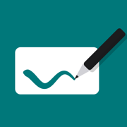

Draw over your OBS picture on iPad
Overlay Pencil shows the picture from OBS on your iPad. You draw over it with Apple Pencil or a finger, and the drawing goes back to OBS as a separate, transparent source. Your audience sees the notes live, on top of the picture.
The stage on iPad: the picture from OBS, your drawing, and controls that stay out of the frame.
How it works
OBS sends its picture to the iPad
Over your local network, using NDI®. Pick the OBS output in Overlay Pencil and it appears on the stage.
You draw over it
Seven brush colours, any width, undo and redo, a composition grid, and snapshots of annotated frames you can save to Photos later.
OBS gets the drawing back as its own layer
The iPad sends only the drawing, on a transparent background. You place it above the picture in your OBS scene, and OBS composites everything. The picture is never re-encoded, so it keeps its full quality.
What you need
- An iPad with iPadOS 17 or later.
- A computer with OBS Studio and the DistroAV plugin, which adds NDI to OBS.
- The iPad and the computer on the same local network - ideally the computer on a cable and the iPad on 5 GHz Wi-Fi.
Step-by-step setup is on the Help page.
Free and Premium
Try everything
All features, with limits that make it clear it's the free version.
- “Overlay Pencil” watermark across the frame, on iPad and in OBS
- Sessions of 2 minutes - then the stage is covered until you restart the app
No watermark, no time limit
A one-time in-app purchase. No subscription. It stays with your Apple ID and works on all your iPads.
- Clean picture in OBS
- Unlimited sessions
Control a video on your Mac
If a video is playing on your computer - YouTube in a browser, VLC, QuickTime - you can pause it and skip 5 or 10 seconds right from the iPad. You'll need the free Overlay Pencil Remote app for Mac. Without it, Overlay Pencil works as usual and the playback buttons simply don't appear.